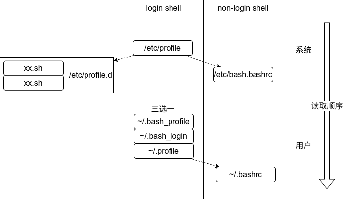
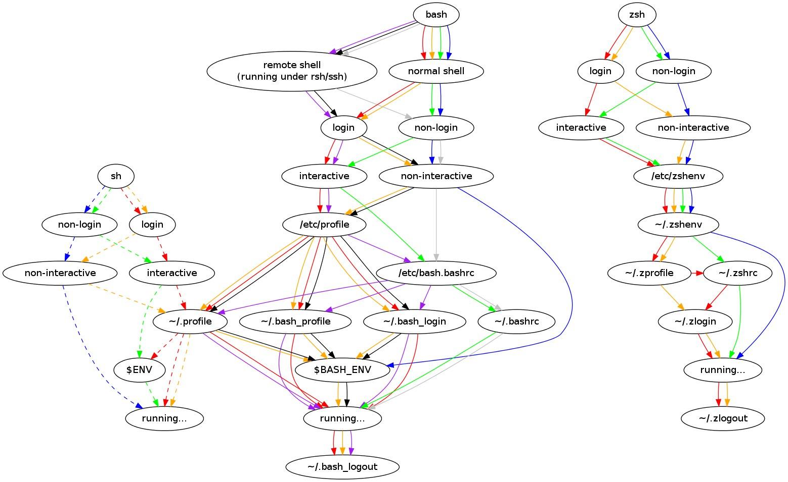

Linux（Shell）环境变量
乱七八糟的。说是 Linux，但 Unix-like 基本都适用。
环境变量
- 环境变量一般习惯为全大写，使用时前面加
$ - 可以使用
echo查看，例如echo $PATH - Linux 上多个环境变量用
:分隔 - 查看所有环境变量可以使用 Shell 内置的
export、set，或者使用env、printenv。
自己设置环境变量可以使用 export 声明，其只在当前 Shell 进程（及子进程）中起作用。如：
export AB=/root使用 export 时等号前后都不可有空格，内容有空格的话用引号包围。
环境变量持久化
/etc/environment
Linux有一个 /etc/environment 文件可以存放系统环境变量，里面只能写变量的声明语句，语法就是如 AA=1234 的键值对。修改后重新登录用户（注销、重启）以生效。
但是这个地方不支持变量展开（如：PATH=$PATH:/usr/local/sbin），所以不是很推荐。
写进 Shell 初始化文件
可以将 export 命令添加进Shell的初始化文件，这样每次启动 Shell 时就会自动加载环境变量。初始化时依次读取系统和用户的初始化文件，以最后读到的为准。
要注意不同Shell的初始化文件也不同，区别在下面一节，先说结论，对于大多数人用的 Bash、Zsh 等：
- 如果修改用户的环境变量，建议修改
~/.xx-rc（根据你使用的shell，如.bashrc）。修改完使用source ~/.xx-rc命令或启动新shell进程、切换用户等即可生效。 - 如果修改系统环境变量，建议在
/etc/profile.d目录下新建或修改.sh结尾的脚本。修改完使用source /etc/profile命令或重新登录用户（注销、重启）以生效。
另外，source 命令也可以用.代替。不过它们只在当前 shell 进程起作用，所以最好还是重新登录或重启。
Shell 初始化文件
部分 Shell 初始化文件
系统/全局配置都在/etc/目录下 |
用户配置都在~目录下 |
|
|---|---|---|
| bash(login) | /ect/profile |
~/.profile |
| bash(non-login) | /etc/bash.bashrc |
~/.bashrc |
| zsh(login) | 同 bash，以及 /etc/zsh/zshprofile |
|
| zsh(non-login) | /etc/zsh/zshrc |
~/.zshrc |
| fish | /etc/fish/config.fish |
~/.config/fish/config.fish |
- 某些发行版可能不同，比如
/etc/bash.bashrc换为/etc/bashrc- 没有列出所有；各种
xx-login与xx-profile作用类似- Fish 好像是没有专门给 login shell 用的文件，需要自己使用 if 判断。其实我觉得这样挺好，因为现在的配置文件太多太乱了。
login shell 与 non-login shell
看过上表会发现有些 Shell 有 xx-profile 和 xx-rc 两套 Shell 的初始化文件。其原因是登录 Shell 有两种方法：login shell 与 non-login shell。
下面来自鸟哥的 Linux 私房菜：
在开始介绍 bash 的配置文件前，我们一定要先知道的就是 login shell 与 non-login shell！ 重点在于有没有登入 (login) 啦！
- login shell：取得 bash 时需要完整的登入流程的，就称为 login shell。举例来说，你要由 tty1 ~ tty6 登入，需要输入用户的账号与密码，此时取得的 bash 就称为『 login shell 』啰；
- non-login shell：取得 bash 接口的方法不需要重复登入的举动，举例来说，(1)你以 X window 登入 Linux 后，再以 X 的图形化接口启动终端机，此时那个终端接口并没有需要再次的输入账号与密码，那个 bash 的环境就称为 non-login shell 了。(2)你在原本的 bash 环境下再次下达 bash 这个指令，同样的也没有输入账号密码， 那第二个 bash (子程序) 也是 non-login shell 。 为什么要介绍 login, non-login shell 呢？这是因为这两个取得 bash 的情况中，读取的配置文件数据并不一样所致。
对于这些Shell，启动 non-login shell 时只会加载 xx-rc；启动 login shell 时只会加载 xx-profile。
通过 su 切换用户时，若直接 su 用户名，会以 non-login shell 登录到该用户，若加上选项 -、-l、--login，则会以 login shell 登录到该用户。
初始化文件读取顺序
还是先以 Bash 为例，可查看 Bash - ArchWiki。
因为 profile 一般会加载同级的 bashrc，我们简化来看后，其实际初始化文件读取顺序：

如果考虑到是否是交互式、是否远程登陆等因素，之前看到一张图讲 sh、bash、zsh 初始化文件的读取顺序大概分别是这样的：

令人头大是吧。当然也有这图的原因，登陆条件与读取文件的图例没有明显区分，大家看个乐子就行。